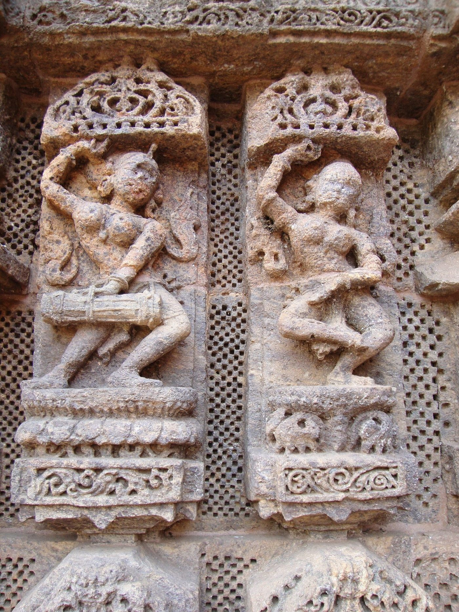
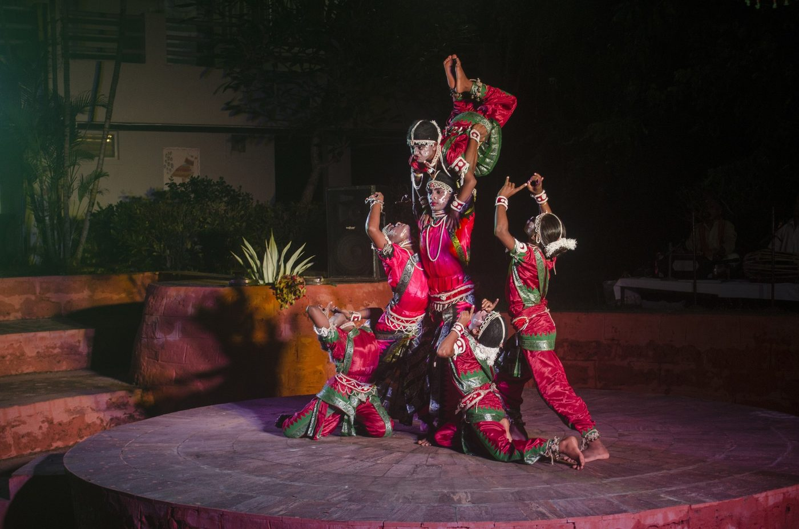
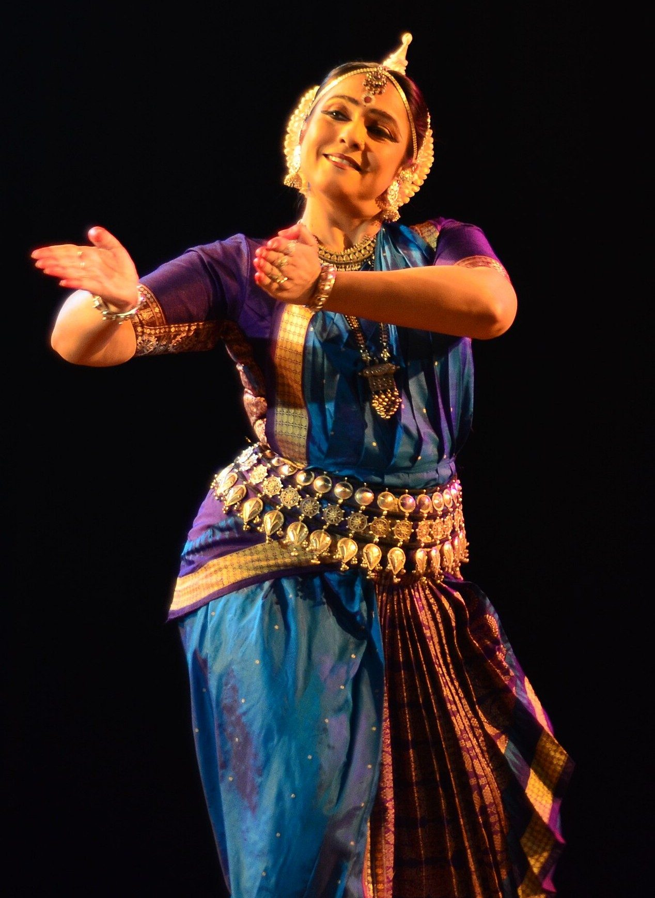
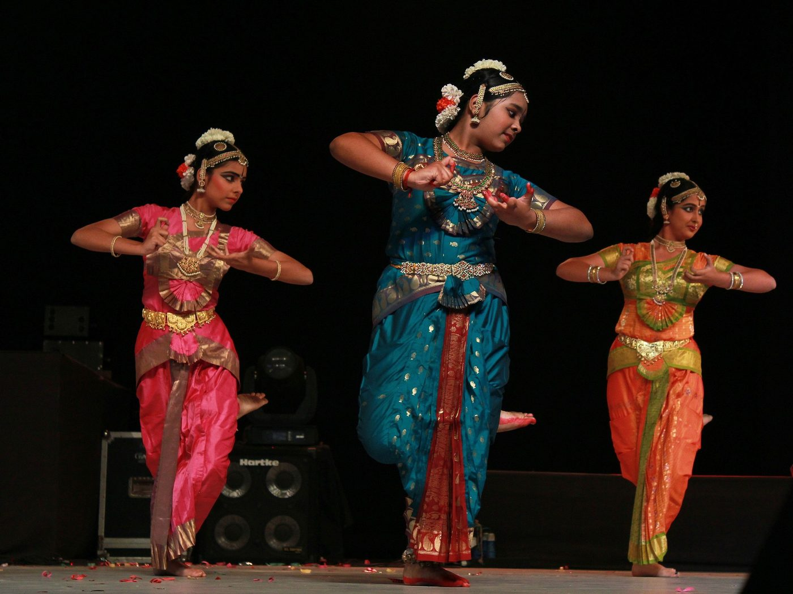

Chapter 17: Odissi and Kuchipudi¶
Two dances of eastern and south-eastern India reached the concert stage by very different routes. Odissi, from Odisha, is known for its sculptural poses and flowing movement, its basis in the songs of Jayadeva’s Gītagovinda, and its links with the great temple of Jagannātha at Puri; it was reconstructed in the 1950s by a group of teachers and scholars from the surviving traditions of temple women and boy dancers, from sculpture and from texts. Kuchipudi, from coastal Andhra, grew out of a tradition of devotional dance-drama performed by the Brahmin men of a single village and was transformed in the twentieth century into a solo concert form performed mainly by women. The comparison between a dance rebuilt from fragments and a theatre turned into a concert dance runs through the account of each form’s technique, repertoire, music and costume and of the people who shaped it.
17.1 Dance in Odisha before Odissi¶
17.1.1 Early evidence¶
Odisha has a long record of dance in inscriptions and sculpture. The Hāthīgumphā inscription of the Jain king Khāravela of Kaliṅga (first century BCE), carved above a cave at Udayagiri near Bhubaneswar, records that the king entertained his capital with festivals of music and dance. A relief in the nearby Rāṇī Gumphā cave shows a woman dancing to the accompaniment of women musicians. From the ninth century, the temples of Bhubaneswar and later the Sun Temple at Konark (thirteenth century), whose dance hall (nāṭamaṇḍapa) is carved with dancers and musicians (Figure 17.1), carry innumerable figures of dancers in the curved postures that modern Odissi has made its own. These sculptures show that dance was cultivated in Odisha over many centuries and that sculptors shared a vocabulary of poses with dancers; they do not, by themselves, demonstrate a continuous tradition from the first century BCE to the present, as is sometimes claimed (Vatsyayan 1968; Kothari and Pasricha 1990).


17.1.2 The mahārīs of Puri¶
The most important institutional home of dance in medieval and early modern Odisha was the temple of Jagannātha at Puri. Its women servants, the mahārīs (also called devadāsīs), were ritually married to the deity and performed dance and song as part of his daily and festival rituals: they danced at the time of the god’s morning meal and sang the songs of the Gītagovinda at the ritual of putting him to sleep, and they had duties in the great annual festivals. Frédérique Apffel Marglin’s study of the mahārīs, based on fieldwork with the last women of the institution in the 1970s, describes their ritual roles, their place in the temple’s system of purity and auspiciousness, and their relationships with the king, the priests and their patrons (Marglin 1985). Their numbers declined in the twentieth century; dedication ended, and the last mahārīs died in the early twenty-first century. Their dance, performed in the temple rather than for the public, contributed relatively little directly to the reconstructed form, though some mahārīs taught the reformers and some items, such as songs of the Gītagovinda, were part of their repertoire.
17.1.3 The gotipuas¶
From about the sixteenth century, according to tradition, groups of young boys dressed as girls — the goṭipuas (“single boys”) — performed dance and song outside the temple, at festivals and processions and for the households of patrons, especially in the service of Vaiṣṇava institutions. Their dance, which combined lyrical songs in Odia with acrobatic poses and backbends (Figure 17.2), was more widely accessible than the mahārīs’, and several of the gurus who reconstructed Odissi in the twentieth century, among them Kelucharan Mohapatra and Pankaj Charan Das, had trained as goṭipuas or in the closely related popular theatre. The goṭipua tradition survives in villages near Puri, notably Raghurajpur, alongside the classical form (Kothari and Pasricha 1990).


17.2 The Making of Odissi¶
The name “Odissi” and the form now known by it date from the 1950s. In those years, as the new state government and the cultural elite of Odisha sought recognition for the region’s arts, a group of gurus and scholars met in Cuttack and Bhubaneswar to define and systematise a classical dance. The group, known as Jayantika, included the gurus Kelucharan Mohapatra, Pankaj Charan Das, Deba Prasad Das and Mayadhar Raut, the scholar Kalicharan Patnaik, and others. They drew on the goṭipua and theatre traditions in which several of them had trained, on what they could learn from the mahārīs, on the poses of temple sculpture, and on texts such as the Abhinayacandrikā, an Odia manual of dance (Chapter 12). They devised a basic vocabulary of steps and poses, a sequence of items for the solo recital, and a body of choreographies, many of which are still danced. After considerable debate, the Sangeet Natak Akademi accepted Odissi as a classical dance (Kothari and Pasricha 1990).
The reconstruction was a creative act. Like the reconstruction of Bharatanāṭyam, it drew on living traditions but also selected, refined and in places invented, and like it, it was carried out largely by men for the benefit of a new generation of women performers from educated middle-class families, who replaced the temple women and boy dancers of the earlier traditions. Different gurus developed distinct styles: Kelucharan Mohapatra’s lyrical and intricate style became the most widespread, while Pankaj Charan Das and Deba Prasad Das, the latter drawing more on folk and tribal elements, developed their own lineages.
17.3 Technique¶
17.3.1 Cauka and tribhaṅga¶
Odissi is built on two basic stances. The cauka (“square”) is a symmetrical stance with the knees bent and turned out, the feet apart and the arms held out at shoulder height and bent at the elbows, forming a square; it is associated with Jagannātha and with vigorous movement. The tribhaṅga (“three bends”) is an asymmetrical stance in which the head, torso and hips are deflected in opposite directions, so that the body forms a gentle S-curve; it is associated with Kṛṣṇa and with lyrical grace. Much of the movement of Odissi consists of passages from one to the other. The terms of Indian iconography for bodily inclination — abhaṅga (slight bend), samabhaṅga (straight), atibhaṅga (extreme bend) and tribhaṅga — are used in teaching (Kothari and Pasricha 1990; Vatsyayan 1974).
17.3.2 Movement¶
The characteristic quality of Odissi lies in its transitions: the torso moves independently of the hips in sideways deflections, the movement flows in curves rather than straight lines, and the dancer passes from one sculptural pose (bhaṅgi) to another, holding each briefly. The footwork, performed with ankle bells, is less percussive than that of Bharatanāṭyam or Kathak, but complex rhythmic passages are danced in the pure-dance items. The hand gestures follow the Abhinayadarpaṇa and the Abhinayacandrikā but are held softly, in curved lines (Chapter 14).
17.4 Repertoire and Music¶
17.4.1 The recital¶
The solo recital devised in the 1950s and later refined by Kelucharan Mohapatra and others consists of (Kothari and Pasricha 1990):
- Maṅgalācaraṇa.
- An invocation, beginning with an offering of flowers and a salutation to the earth (bhūmi praṇām), followed by a verse in praise of a deity, often Jagannātha or Gaṇeśa.
- Baṭu or sthāyī.
- A pure-dance item, associated with Śiva as Baṭukeśvara, that presents the basic poses and movements of the form in a sequence of increasing complexity.
- Pallavī.
- An item of pure dance in which a melody in a particular rāga is elaborated by both musicians and dancer, with increasingly intricate movement and rhythm.
- Abhinaya.
- One or more expressive items, interpreting a song from the Gītagovinda or from Odia devotional poetry.
- Mokṣa.
- A concluding item of fast pure dance, said to represent liberation, ending in stillness.
Choreographers have also created dance-dramas and new items, and a short item called tarijham is sometimes added between pure and expressive dance.
17.4.2 The Gītagovinda¶
Jayadeva’s Gītagovinda, a Sanskrit poem of twelve cantos with twenty-four songs (aṣṭapadīs) on the love of Kṛṣṇa and Rādhā, composed in the twelfth century, has a special place in Odisha. Jayadeva is claimed by Odia tradition as a native of the region, the poem has been sung in the Jagannātha temple for centuries, and an order of King Pratāparudradeva inscribed in the temple about 1500 required that its songs be sung and danced before the god. In Odissi, songs of the Gītagovinda are the principal vehicle of expressive dance. Among the most often danced are lalita-lavaṅga-latā (the third song), which describes spring in the forest where Kṛṣṇa plays with the cowherd women; yāhi mādhava (the seventeenth), in which Rādhā dismisses the unfaithful Kṛṣṇa when he comes to her at dawn; and priye cāruśīle (the nineteenth), in which Kṛṣṇa begs her forgiveness. The poem’s frank eroticism was understood in the Vaiṣṇava tradition as an expression of the love between the soul and god (Chapter 3; Volume 8, Kāvya Kalpalatā).
17.4.3 Odissi music¶
Odissi is danced to music sung in a regional style that its exponents call “Odissi music”, drawing on the tradition of Odia devotional song and on treatises written in Odisha, such as the seventeenth-century Saṅgītanārāyaṇa. The ensemble includes a singer, a player of the mardala (a barrel drum), a flute or violin and cymbals. Besides the Gītagovinda, the repertoire uses the Odia songs of poets such as Upendra Bhañja and Kavisūrya Baladeva Ratha, and genres such as the campū (alternating prose and verse) and the cautiśā, an acrostic poem in which each stanza begins with a successive letter of the Odia alphabet. Whether Odissi music should be classed as a third system beside Hindustani and Karnatak music, or as a regional variety of Hindustani music, has been debated since the mid-twentieth century.
17.4.4 Costume¶
The Odissi dancer wears a silk sari of Odishan weave, often a Sambalpuri or Bomkai, draped and stitched to allow movement; silver jewellery in the filigree style of Cuttack; and a crown-like headpiece of white pith (tāhiā) set into a bun of hair and flowers, said to resemble the spire of a temple (Figure 17.3). The jewellery and headpiece were adopted in the 1950s and after, partly from the costume of the goṭipuas and of temple sculpture.


17.5 Dancers and Teachers¶
Kelucharan Mohapatra (1926–2004), who had begun as a goṭipua and a percussionist in the popular theatre, became the most influential teacher and choreographer of Odissi; his choreographies of pallavīs and Gītagovinda songs are danced throughout the world. Among the first generation of women performers were Priyambada Mohanty, Minati Mishra and Sanjukta Panigrahi (1944–1997), who as a girl from a Brahmin family scandalised her community by becoming a professional dancer, studied Bharatanāṭyam at Kalakshetra and Odissi with Kelucharan Mohapatra, and became one of the best-known Odissi dancers in the world; she also worked with the theatre director Eugenio Barba in the International School of Theatre Anthropology. Indrani Rahman and Sonal Mansingh helped bring Odissi to national and international audiences, and later dancers such as Madhavi Mudgal, Kumkum Mohanty, Aruna Mohanty, Ratikant Mohapatra and Ileana Citaristi have taught and choreographed widely. Odissi is now taught in many countries (Kothari and Pasricha 1990).
17.6 Odissi Today: Debates and Directions¶
Odissi’s rapid rise from a regional reconstruction to an internationally performed classical form has generated debates of its own. One concerns its relation to its sources. The reconstruction of the 1950s drew on the goṭipuas and on popular theatre at least as much as on the temple, yet the official history of the form emphasised the temple and the mahārīs, and the goṭipua tradition was for a long time regarded as a “folk” relative rather than a parent. Since the 1990s scholars and dancers have paid more attention to the goṭipuas and to the surviving mahārīs, and some dancers have tried to learn and present what remained of the mahārīs’ temple repertoire; such presentations raise the same questions about the transfer of ritual practice to the stage that arise in Bharatanāṭyam (Chapter 15) (Marglin 1985; Kothari and Pasricha 1990).
A second debate concerns style. Kelucharan Mohapatra’s style became so dominant that it came to be identified with Odissi itself, while the lineages of Pankaj Charan Das and Deba Prasad Das, the latter with its stronger links to the tribal and folk dances of Odisha and to Śākta and Tantric themes, were less widely known; their students have since worked to give them greater visibility. A third concerns innovation: choreographers have created group works, dance-dramas and contemporary pieces using Odissi’s vocabulary, and the question of how far the form can be extended without losing its identity is discussed among teachers, critics and audiences. The Odisha state government and its institutions, the Odissi Research Centre in Bhubaneswar among them, have supported documentation and research, and festivals at the temples of Konark and Mukteśvara present the form in settings that recall the sculptures from which much of its imagery derives.
Odissi’s international spread began early. Indrani Rahman performed it abroad in the 1960s, Sanjukta Panigrahi’s work with Eugenio Barba brought it into the experimental theatre of Europe, and dancers from many countries — among them the Italian-born Ileana Citaristi, who settled in Odisha — have studied and taught it. Like Bharatanāṭyam and Kathak, it is now taught in the South Asian diaspora and beyond (Chapter 23) (Kothari and Pasricha 1990; Katrak 2011).
17.7 Kuchipudi: The Village and Its Theatre¶
17.7.1 Kuchipudi village¶
Kuchipudi takes its name from a village in the Krishna district of Andhra Pradesh, whose Brahmin families — the Bhāgavatulu — performed devotional dance-dramas (yakṣagānas or kalāpas) in Telugu. According to tradition, the village was granted to the performers as an endowment by Abul Hasan Tana Shah, the last Qutb Shahi sultan of Golconda, in the late seventeenth century, after he had seen them perform. The troupes travelled through the Telugu country, performing at temple festivals and for patrons; their plays lasted through the night, combined song, dance, mime and spoken dialogue, and were performed entirely by men, with men taking the women’s roles (Kothari and Pasricha 2001).
17.7.2 Siddhendra Yogi and the Bhāmākalāpam¶
The founder of the tradition, according to its own account, was Siddhendra Yogi, a Vaiṣṇava ascetic whose date is uncertain (he is often placed in the seventeenth century). He is said to have composed the Bhāmākalāpam, the dance-drama of Satyabhāmā, Kṛṣṇa’s proud and jealous queen, which became the most famous work of the repertoire, and to have required the boys of the village to learn to perform it. The role of Satyabhāmā, with its long entrance song and its expression of pride, love, anger and longing, was the supreme test of the village’s actors; in the twentieth century Vedantam Satyanarayana Sarma (1935–2012) was especially celebrated in it. Other plays of the repertoire include the Gollakalāpam, a dialogue between a milkmaid and a Brahmin on philosophical and social questions, the Prahlāda Caritram, Uṣāpariṇayam and Śaśirekhāpariṇayam.
17.7.3 The Bhāmākalāpam in performance¶
The Bhāmākalāpam shows the conventions of the village theatre clearly. Performances traditionally took place in the open air, on a temporary stage lit by torches, before an audience that sat through the night. The sūtradhāra, who sang, conducted the drummers and spoke as narrator and as interlocutor of the characters, opened the play with invocations and introduced each character. A character entered behind a curtain held by two attendants, presented himself or herself through an entrance song (pravēśa daru) that described his or her qualities, and was revealed when the curtain was lowered. Satyabhāmā’s entrance is the most famous of all: she announces herself as the proud and beautiful queen of Kṛṣṇa, and the scene, extended by repetition and improvisation, could last for hours. The play then follows Satyabhāmā through her quarrel with Kṛṣṇa, her separation, her messages through her confidante Mādhavi, and her eventual reconciliation, giving the actor of her role scope for every shade of pride, jealousy, longing and love (Kothari and Pasricha 2001).
Spoken dialogue, in Telugu prose and verse, alternated with song and dance; the actor of Satyabhāmā both sang and danced the songs and spoke the dialogue, often improvising exchanges with the sūtradhāra that drew laughter from the audience. The performers were Brahmin men, and the female roles were played by men who specialised in them, a convention that survives in the village and in the Bhāgavata Mēḷa. The combination of devotional subject, sophisticated poetry, theatrical improvisation and an all-male cast is characteristic of the Telugu dance-drama and quite different from the solo women’s dance that Kuchipudi later became.
17.7.4 Related traditions¶
Kuchipudi belongs to a family of Telugu devotional dance-dramas that also includes the Bhāgavata Mēḷa of Melattur and neighbouring villages in the Thanjavur region of Tamil Nadu, where Telugu-speaking Brahmin families perform plays by Melattur Veṅkaṭarāma Śāstri (eighteenth to nineteenth century), such as Prahlāda Caritram, at the festival of Narasiṃha each year; and the Telugu court theatre of the Thanjavur Nāyakas. It is more distantly related to the Yakṣagāna of Karnataka (Chapter 20). These traditions share the role of the sūtradhāra or bhāgavata, the narrator-singer who introduces and links the scenes; the entrance songs (pravēśa daru) with which characters present themselves; and the alternation of song, dance and dialogue (Richmond et al. 1990).
17.8 From Dance-Drama to Solo Dance¶
In the twentieth century Kuchipudi was transformed. Vedantam Lakshminarayana Sastry (1886–1956), a master of the village tradition, began to teach women and to develop solo items extracted from the dance-dramas. After debates at the Sangeet Natak Akademi in the late 1950s, in which advocates such as the scholar Banda Kanakalingeswara Rao argued for its classical character, Kuchipudi was recognised as a classical dance. The decisive figure in its transformation was Vempati Chinna Satyam (1929–2012), a member of one of the village families, who founded the Kuchipudi Art Academy in Madras in 1963. He trained women dancers in large numbers, standardised the technique, choreographed a solo repertoire and many new dance-dramas for women and men, and made Kuchipudi a pan-Indian and international concert form. Yamini Krishnamurthy (1940–2024), Raja and Radha Reddy and Swapnasundari were among the dancers who brought it to national prominence (Kothari and Pasricha 2001).
The transformation had costs comparable to those of the other classical forms. The village tradition of all-male dance-drama declined, though the village and some of its families continue to perform; the theatrical skills of the old repertoire — speech, improvisation, the playing of women’s roles by men — became marginal to a form centred on the solo female dancer; and the debate between those who regard the dance-drama as Kuchipudi’s true essence and those who emphasise the solo concert continues.
17.9 Technique and Repertoire¶
17.9.1 Technique¶
Kuchipudi shares much of its basic vocabulary with Bharatanāṭyam — the half-seated posture, the aḍavus (Telugu aḍugus), the hand gestures of the Abhinayadarpaṇa — but it moves with greater fluidity and speed, with quick, darting movements, jumps, turns and a playful, dramatic quality inherited from the dance-drama. Its expressive style is more openly theatrical, and dancers often sing or speak lines in performance, as in the old plays.
17.9.2 Repertoire¶
The modern solo recital typically includes an invocation, often to Gaṇeśa; a pravēśa daru, the entrance song of a character such as Satyabhāmā, presented as a solo; jatisvarams and tillānas of pure dance; expressive items, among them the padams of Kṣetrayya, the Telugu songs of Annamācārya (1408–1503), the poet of the Tirupati temple, and Sanskrit verses; and the taraṅgam. The taraṅgam sets passages from Nārāyaṇa Tīrtha’s Sanskrit song-cycle on the life of Kṛṣṇa, the Kṛṣṇalīlātaraṅgiṇī (seventeenth century), to dance; in modern performance it usually ends with the dancer dancing on the rim of a brass plate, sometimes with a pot of water on the head, a feat whose origin is unclear and which has no basis in Nārāyaṇa Tīrtha’s text (Kothari and Pasricha 2001). Group dance-dramas, old and new, remain an important part of Kuchipudi practice.
17.9.3 Music and costume¶
Kuchipudi is accompanied by Karnatak musicians — a naṭṭuvaṉār, singer, mṛdaṅgam player and violinist or flautist — and most of its songs are in Telugu. Its solo costume and jewellery resemble those of Bharatanāṭyam (Figure 17.4), with differences in the cut of the costume; the dance-dramas use character costumes, crowns and make-up for gods, demons and heroes.


17.10 Two Paths to Classical Status¶
Odissi and Kuchipudi show how differently “classical” Indian dance forms came into being. Odissi was assembled in the 1950s from temple, popular and sculptural sources by a group of gurus and scholars; Kuchipudi was adapted from a living village theatre by its own hereditary masters. Odissi replaced the temple women and boy dancers of its past with middle-class women; Kuchipudi replaced the Brahmin men of its village with women from many communities. Both found their authority in Sanskrit texts and temple sculpture as well as in their own traditions, and both were recognised by a national institution, the Sangeet Natak Akademi, after debates about whether they were sufficiently “classical”. The forms that resulted are now among the most admired in India, and their histories show that the classical canon was made, not simply inherited (Chapter 1).
Further Reading¶
Kothari and Pasricha (1990) and Kothari and Pasricha (2001) are well-illustrated accounts of the two forms, their history, technique and repertoire. Marglin (1985) is the essential study of the mahārīs of Puri. Vatsyayan (1968) and Vatsyayan (1974) relate Odissi to sculpture and to the other classical forms. For the Telugu dance-drama traditions see Richmond et al. (1990).